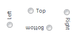
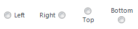
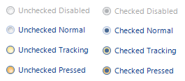

KryptonRadioButton
Multiple KryptonRadioButton instances are used together to provide a group of possible options that the user can choose from. This control combines the radio button functionality with the styling features of the Krypton Toolkit. The user can check the radio button by using the mouse or a keyboard mnemonic. Place code in the CheckedChanged event handler to perform actions based on the checked state. The content of the control is contained in the Values property. You can define Text, ExtraText and Image details within the Values property.
Appearance
The control uses a label style for presenting the text and image associated with the radio button. The LabelStyle property has a default value of NormalControl giving the same appearance as a KryptonLabel instance. If you place the radio button control onto a Panel background then you are recommended to change the LabelStyle to NormalPanel so that the label has an appropriate contrasting appearance.
You can use the Orientation property to rotate the control. The default setting of Top shows the content in a left to right and top to bottom arrangement. Specify Bottom to have the control displayed upside down, Left to show the content rotated 90 degrees left and Right for 90 degrees rotated right. See figure 1 for examples.

Figure 1 – Orientation Property
To alter the relative location of the radio button use the CheckPosition property. The default is Left and shows the radio button on the left side of the control values. Alternatively use the Top, Bottom or Right values as shown in Figure 2.

Figure 2 – Orientation Property
Checked
The Checked property is a boolean property that returns True when the radio button is checked and otherwise returns False. You can hook into the CheckedChanged event in order to be notified when the property has changed values.
AutoCheck
If the radio button becomes checked you would normally want all other radio buttons inside the same container to become unchecked. With this property defined as True, which is the default, this will happen automatically. If instead you would prefer to manually update the checked state of your radio buttons then set this to False for all instances inside the same container.
Two States
Only two possible states of Disabled and Normal are used by the radio button control. In order to customize the appearance use the corresponding StateDisabled and StateNormal properties. Note that only the content characteristics can be modified as the radio button never has a border or background.
To speed up the customization process an extra StateCommon property has been provided. The settings from this are used if no override has been defined for the state specific entry. Note that the specific state values always take precedence and so if you define the text font in StateNormal and StateCommon then the StateNormal value will be used whenever the control is in the Normal state. Only if the StateNormal value is not overridden will it look in StateCommon.
Focus Override
If the control currently has the focus then the OverrideFocus settings are applied. This can occur when the control is in the Normal state. By default the override only alters the appearance so that a focus rectangle is drawn around the content so that the user can see that the control currently has the focus.
Examples of Appearance
Figure 3 shows the appearance when using the Office 2007 - Blue palette with the default settings. You can see checked and unchecked appearance when disabled, normal, tracking or pressed down.

Figure 3 – RadioButton Appearance